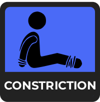
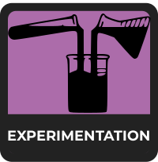

FRISSON
SUBLIMATION
MATURITY
SAFETY
OPENNESS






MasochValues is a quiz, running on a modded base of 8values,
that attempts to map sexual masochism. You will be presented by a statement, and then you will answer with your opinion on the statement,
from Strongly Agree to Strongly Disagree, with each answer slightly affecting your scores. At the end of the quiz, your
answers will becompared to the maximum possible for each value, thus giving you a percentage. Answer honestly! This test should only be taken by people above the age of 18.
There are questions in the test.
There are five axes - and each has two opposing values assigned to them. They are:
CHASTITY
Those with higher Chastity scores emphasise the need to 'hold back' sexual feelings to make them more rewarding later, if at all. They view their personal pleasure as secondary to that of their master or dominant partner.
FRISSON
HEDONISM
Those with higher Hedonism scores emphasise their expression of desire and pleasure as the most important part of the relationship. They view their pleasure as essential to the interaction — perhaps as a reward for obedience — to their dominant partner.
CONSTRICTION
Those with higher Constriction scores believe that being restricted physically is far more appealing than having free-range movement. High Constriction scorers often see their dominant partners as the ones that should take the lead in deciding things for them, including their movement options.
SUBLIMATION
EXPRESSION
Those with higher Expression scores believe that free movement, equal interaction, and mutual respect are better for expressing their sexuality. High Expression scorers often see their dominant partners not as absolute authority figures, but rather as equals which they've consented to ruling over them.
INNOCENCE
Those with higher Innocence scores generally prefer innocence, inexperience — sometimes not just their own but also of their partner — in ways that can range from simple cluelessness to age regression.
MATURITY
EXPERIENCE
Those with higher Experience scores like experience — especially from their partner — in the pursuit of an equitable, highly communicative and serious relationship between people who are visibly mentally "grown ass adults" in terms of behaviours and general activities and interests.
DESTRUCTION
Those with higher Destruction scores desire their own destruction. Be it through their dominant partner's direct hand or through self-inflicted punishments ordered by the dominant partner, they want to be destroyed for sexual reasons — physically, mentally, emotionally.
SAFETY
PROTECTION
Those with higher Protection scores yearn for safety at all costs, even sometimes at the expense of riskier, if more pleasurable experiences. High Protection scorers desire aftercare, love, comfort, and generally prefer gentle dominance over cruelty.
EXPERIMENTATION
Those with higher Experimentation scores are the most likely to say, truthfully, "I'll try anything!" when asked about their sexual fetishes. High Experimentation scorers also tend to judge others less for their specific kinks. Some even actively reject social taboos at the expense of appearing 'normal'.
OPENNESS
CONSERVATISM
Those with higher Conservatism scores are likely to have perhaps 1–2 sexual interests outside of regular sex that count as fetishes, but otherwise be quite average in terms of sexual interests. Additionally, they tend to have little interest in experimentation, believing that they've "found their place" sexually.
MasochValues is licensed under the MIT License, which permits "without restriction" the rights to "use, copy, modify, merge, publish, distribute, sublicense, and/or sell copies of the Software". Same as 8values license.